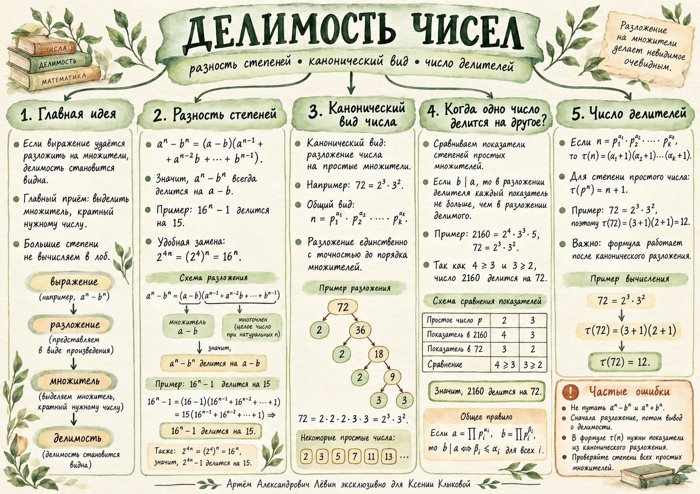

00 Проверьте учебный маршрут
Отметьте те действия, которые сможете выполнить самостоятельно. Отметки сохраняются в этом браузере.
01 Почему n⁵ − n делится на 6
Сначала вынесем общий множитель, затем воспользуемся разностью квадратов два раза:
= n(n2 − 1)(n2 + 1)
= (n − 1)n(n + 1)(n2 + 1).
В произведении появились три последовательных целых числа: n−1, n, n+1. Среди них одно делится на 3 и хотя бы одно чётное. Поскольку 2 и 3 взаимно просты, их произведение кратно 6.
Вывод: 6 ∣ (n5 − n) для любого целого n.
02 Разность одинаковых степеней
Для натурального m ≥ 1 верно:
Во второй скобке ровно m слагаемых. Показатель a уменьшается от m−1 до 0, показатель b увеличивается от 0 до m−1; сумма показателей равна m−1.
Как выглядит правило для первых степеней
a⁴ − b⁴ = (a − b)(a³ + a²b + ab² + b³)
a⁵ − b⁵ = (a − b)(a⁴ + a³b + a²b² + ab³ + b⁴)
Если a и b целые, а a ≠ b, то am − bm делится на a − b. Деление на ноль запрещено.
Доказательства без вычисления степеней
Делимость на 15:
= 15(16n−1 + 16n−2 + ⋯ + 1).
Делимость на 16: 34n − 1 = 81n − 1; множитель 81 − 1 = 80 делится на 16.
Делимость на 100: у 100126 − 1 появляется множитель 1001 − 1 = 1000, кратный 100.
03 Каноническое разложение
Каждое натуральное N ≥ 2 единственным способом (с точностью до порядка) раскладывается на степени различных простых чисел.
Как читать математическую запись
∏i=1k piαᵢ — произведение, а ∑i=1k piαᵢ — сумма. При каноническом разложении используется произведение.
Простые множители числа 180: 2, 3, 5. Здесь три различных простых делителя.
04 Сравниваем показатели степеней
Для натуральных A и B запишите их через одинаковые простые основания. Если простого числа в разложении нет, его показатель равен 0.
A = ∏ piαᵢ, B = ∏ piβᵢ.
Делится ли 2160 на 72?
| Простое число | 2 | 3 | 5 |
|---|---|---|---|
| 2160 | 4 | 3 | 1 |
| 72 | 3 | 2 | 0 |
| Сравнение | 3 ≤ 4 | 2 ≤ 3 | 0 ≤ 1 |
Все условия выполнены. Значит, 72 ∣ 2160, причём 2160 : 72 = 30.
Делители числа 360
360 = 2³ · 3² · 5. Числа 12 и 18 делят 360, а число 16 не делит: в разложении 16 есть четыре двойки, а в 360 — только три.
Наименьшее число с тремя различными простыми делителями
Для числа, кратного 12 и имеющего три различных простых делителя, минимальное решение:
05 Сколько положительных делителей?
Пусть N = p1α₁ · ⋯ · pkαₖ. Тогда количество натуральных делителей равно:
Для каждого простого множителя можно выбрать показатель степени 0, 1, …, αi — всего αi + 1 вариантов. Поэтому числа вариантов перемножаются.
Различайте простое и составное основания: для простого p верно τ(pm) = m + 1. Для 10025 нужно сначала получить 250 · 550.
Обратная задача
Если N = 2α · 3² · 5 и τ(N) = 30, то (α+1) · 3 · 2 = 30, откуда α = 4.
06 Тренировка · Путь А
Десять заданий идут от распознавания формул к самостоятельному применению свойств. Ответ к каждому раскрывается отдельно.
- Разложите на множители a⁵ − b⁵. Сколько слагаемых во второй скобке?
Проверить
(a − b)(a⁴ + a³b + a²b² + ab³ + b⁴); пять слагаемых. - Докажите, что n⁵ − n делится на 6 при любом целом n.
Проверить
n⁵ − n = (n−1)n(n+1)(n²+1). Среди трёх последовательных чисел есть чётное и кратное 3. - Докажите, что 34n − 1 делится на 16 для любого натурального n.
Проверить
34n − 1 = 81n − 1 = 80(81n−1 + ⋯ + 1). Так как 16 ∣ 80, делимость верна. - Докажите, что 1001²⁶ − 1 делится на 100.
Проверить
1001²⁶ − 1 = 1000(1001²⁵ + ⋯ + 1), и 100 ∣ 1000. - Запишите 180 в каноническом виде. Назовите его различные простые делители.
Проверить
180 = 2² · 3² · 5; делители 2, 3, 5. - С помощью разложения выясните, какие из чисел 12, 16, 18 делят 360.
Проверить
12 и 18 делят 360; 16 не делит, поскольку показатель 2 в разложении 360 равен 3. - Найдите минимальное натуральное число, кратное 12 и имеющее ровно три различных простых делителя.
Проверить
60 = 2² · 3 · 5. - Найдите число делителей 72 с помощью τ и проверьте перечислением.
Проверить
τ(72) = (3+1)(2+1) = 12. Делители: 1, 2, 3, 4, 6, 8, 9, 12, 18, 24, 36, 72. - Вычислите количество делителей 100¹².
Проверить
100¹² = 2²⁴ · 5²⁴; τ = (24+1)² = 625. - Для N = 2α · 3² · 5 известно τ(N) = 30. Найдите α.
Проверить
(α+1)·3·2 = 30, откуда α = 4.
07 Материалы занятия
Ментальная карта соединяет разность степеней, каноническое разложение, проверку делимости и подсчёт делителей.

